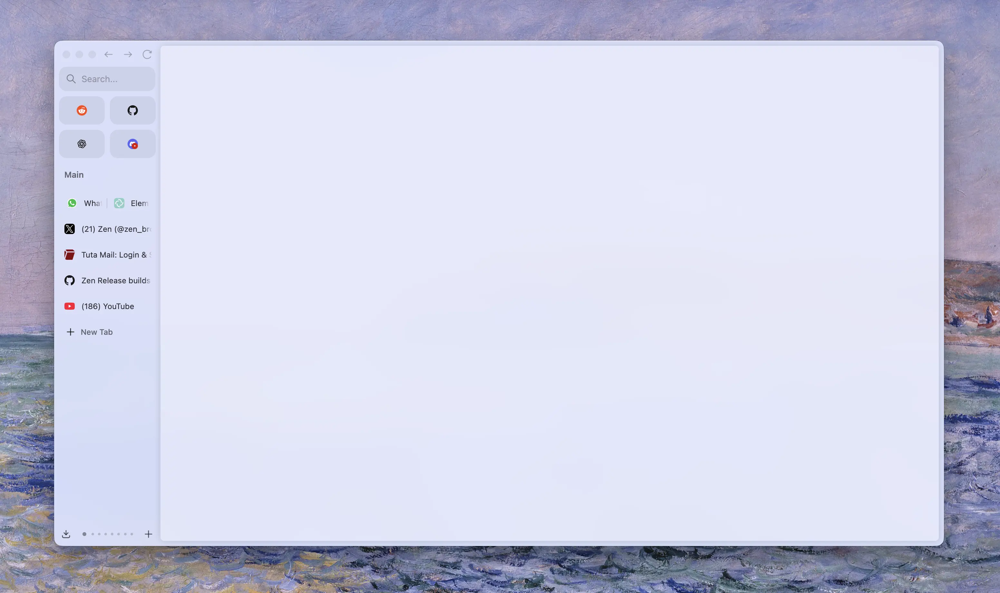
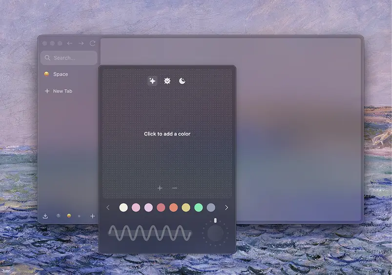

There was a time when the internet felt different—when it wasn’t a maze
of dark patterns designed to manipulate your attention, when software
was built for the user, not for the highest bidder. Back then, a browser
was simply a tool, a window to the world, not a marketplace disguised as
an app.
Somewhere along the way, that changed.
Today, browsers are riddled with engagement traps. They
track you, sell your data, shove crypto schemes in your face, and call
it ‘innovation.’ But real innovation isn’t about bloated AI assistants
or endless monetization tricks. Real innovation makes life simpler, not
more exhausting.
I built Zen because I believe the browser should serve you. It should be
fast, transparent, and private by design—not as a checkbox feature, but
as a philosophy. It should get out of your way, so you can get in, do
what you need to do, and step away from the screen without feeling
drained.
I’m not a corporation. I don’t have a marketing team
crafting sleek slogans, nor a boardroom plotting engagement metrics. I’m
just a developer who saw what was wrong and decided to fix it. Zen isn’t
about gimmicks. It’s about respect—for your time, your privacy, and your
right to a better web.
It won’t be perfect, and I won’t
pretend to have all the answers. But with the help of a passionate
community, I know we can build something that matters. A browser that
doesn’t fight against you, but works with you.
There was a browser that kind of did this, Arc.
For a while, it felt like a breath of fresh air: a browser that
challenged conventions, that cared about design, that aimed to make
browsing feel intentional rather than chaotic. It rethought the
interface, introduced thoughtful features, and for a moment, it seemed
like someone finally got it.
But then, things changed.
The Browser Company, Arc's VC-backed creators, became ambitious, and they decided that their loyal user-base still fell short of their goals to compete with the big names like Chrome, right from the start. Thus, they announced that Arc was "good enough" and went off to work on a new AI-powered browser.
Yet, it wasn't. The Windows version was a shadow of what was promised—slow, unstable, missing core features. The MacOS version was in a better state, but performance and stability gradually degraded with every update. What started as a vision for a better browser quickly became yet another company chasing after monetization, pivoting to AI gimmicks and engagement loops instead of refining the core experience. Thus, Arc was finished, before it had even reached its real potential.
I won’t pretend Arc didn’t inspire me. It did. There’s a lot to admire
in its design philosophy, in its willingness to rethink how we interact
with the web. But inspiration isn’t imitation. I’m taking the
good—thoughtful UX, a clean interface, a focus on user control—and
cutting out the bad. No forced online accounts. No feature bloat
disguised as innovation. No chasing trends just to stay relevant.
Zen
isn’t about maximizing engagement. It’s about minimizing friction. It’s
about building a browser that works with you, not on you. And beyond
that, I’m exploring my own ideas—rethinking not just how a browser
looks, but how it feels to use. How it fits into your life without
demanding more of your attention than necessary. While it's still in
early development, I'm excited to share it with you, and to hear your
thoughts on how we can make it better together.
So, what's the plan?
Zen is still in its early stages, but it’s growing fast. I’m
working on a roadmap that focuses on the essentials: mantain firefox updated
and secure to gain trust, improve the UI/UX to make it more intuitive and enjoyable, and
implement features that make your life easier, not more complicated.
Arc's Basic Features
Expand on our own interesting ideas
Final touches, polishing and rebrand for stable release
The future of Zen isn’t set in stone. It’s a work in progress, shaped by
your feedback, your ideas, and your needs. I’m not building this browser
for me. I’m building it for you—for all of us who believe the web can be
better, who want to take back control of our digital lives, and who
refuse to settle for the status quo.
If you’re tired of
browsers that treat you like a product, if you’re looking for a
different way to browse, if you believe in a web that respects your
privacy and your time, then I invite you to join me on this journey. Let’s
build something that matters. Let’s build a browser that respects you.
I also want to invite you to contribute, if you have any ideas, suggestions
or want to help in any way, feel free to let us know. Some zen features where completely
community driven, implemented by external contributors. We are always looking for
new ideas and ways to improve the browser.
The internet deserves better.
So do you.

From customization to clarity: lessons learned building Zen Browser.
TL;DR
I'm not a design expert, just someone learning through building Zen. These are personal just
thoughts. I hope they spark reflection, especially for those in the FOSS
community. Read with an open mind, think beyond what I’ve written, and if anything resonates or
you disagree, feel free to reach out. I’d love to talk more and keep on learning!
Don't worry, don't uninstall Zen inmediatedly. This isn’t about removing all customization.
Zen will always support mods and deeper tweaks for those who want them, just not at the cost of
thoughtful, opinionated design.
Read, reflect, and enjoy! ‹3
A year ago, I set out to build a browser. Not just any browser, but my browser. One that would
reflect my values, my needs, my ideal vision of the web. I called it Zen Browser.
Like many developers, I started by dreaming big: total customization, endless tweaks, and fine-grained
control over every pixel. But somewhere along the way, something changed.
What I found instead was clarity, not in complexity, but in simplicity. In choosing design that respected the
user, instead of overwhelming them with choices.
The Allure of Customization
There’s something exciting about total freedom. Developers love the idea of giving users endless choice.
It feels democratic. Respectful. Open.
That’s how I started. Zen Browser was going to be fully moldable. You’d shape it to your needs, down
to the smallest detail.
But what I learned is that more choice doesn’t always mean a better experience. In fact, it often leads
to decision fatigue. Users get lost in the settings instead of enjoying the product. And many never find a
setup they actually love, they just keep tweaking.
At some point, I realized that no one ever said, “I love this browser because I spent three hours configuring
it.” They just said, “It works. It feels right.”
The Turning Point
It happened with something as small as a color picker.
Zen Browser's original color picker was incredibly flexible. You could set any color, rotation,
gradient style, it was a playground. Total freedom. And on paper, it was a win. Users could make their browser
look exactly how they wanted.
But something didn’t sit right. The more I used it, the more I noticed the results often looked... off. Some color
combos clashed. Others lacked contrast. Gradients looked messy or chaotic. The feature was powerful, but it didn’t
guide anyone. It just gave them tools and walked away.
That’s when I looked at what Arc did, and I’ll admit, we copied it. (Big shock, I know.)
We removed the rotation. We enforced color harmony. Gradients had to use complementary or analogous tones. The result?
No more wild combinations. No more chaos. Suddenly, every workspace had colors that just worked. Gradients that felt
designed, not generated.
Not everyone liked the change. People asked why they couldn’t tweak things the old way. They missed the freedom. But I didn’t miss it. In fact, I felt proud.
That was my turning point. When I realized I didn’t want to make something endlessly customizable. I wanted to make
something beautiful. Something that felt finished. Something that didn’t ask to be fixed or adjusted, it just looked good,
because it was designed that way.
That moment, over a simple color picker, defined everything that came next.
Looking back, it wasn’t just about colors. It was about clarity. I realized that good design isn’t about offering every
option, it’s about making the right choices so the user doesn’t have to. That shift changed everything about how I approached Zen.
Finding the Sweet Spot
Total rigidity can be just as limiting as total freedom. The real challenge, and the real art, is in finding the
balance between the two.
That’s where the idea of sensible defaults, respectful overrides came in.
With Zen, I wanted most users to open the browser and feel like it was already finished. Clean, quiet,
considered. But I also wanted to leave a door open, discreet, intentional, out of the way, for those who needed more.
That’s why advanced preferences exist. Hidden settings. Power-user flags. The kind of features you don’t stumble
into, but deliberately reach for. Like the ability to bring back full gradient control in the color picker.
Or override animation timings. Or adjust tab behavior beyond the default.
These aren’t features for everyone. They’re escape hatches for those who know what they want. And keeping them
tucked away preserves the core experience for everyone else.
The sweet spot isn’t compromise. It’s clarity, knowing what your product stands for, while still leaving space
at the edges for people who ask for more.
What I Learned
This past year didn’t just teach me how to build a browser. It taught me how to think.
I used to believe that more options made a better product. That users wanted control above all else. But
I’ve learned something deeper, people don’t open a browser to tweak. They open it to use. And the best
experience is the one that’s already great, before you touch a single setting.
- Customization is not a replacement for good design. If your product only shines when users tweak it, you haven’t finished it.
- Defaults matter more than features. Most people never change settings. What they see first becomes their entire experience.
- Good design is opinionated, and that’s okay. You’re allowed to make decisions on behalf of the user, as long as those decisions are thoughtful and respectful.
- Hidden power is better than visible clutter. Give advanced users what they need, but keep the surface calm and approachable.
- Every decision sends a message. Even a toggle switch tells the user what kind of product they’re dealing with, precise and
focused, or chaotic and unfinished.
Zen Browser got better the moment I stopped trying to please everyone and started trying to serve someone, someone who wants clarity, not control. Someone who wants to open their browser and feel calm, not busy.
A Quiet Conclusion
I’m not a design expert. I didn’t study user experience or typography or color theory. I’m just
someone who built a browser, made a lot of mistakes, and slowly started to see things differently.
Zen Browser isn’t perfect. It still has rough edges. There are things I’d change, and things I’m
still unsure about. But if there’s one thing I’ve learned, it’s that simplicity takes more courage
than complexity. It’s easier to add features than it is to say “this is enough.”
This past year taught me to trust the user, not by handing them the entire toolbox, but by giving
them something they can rely on. Something that feels considered.
If you're building something of your own, I hope you don’t feel pressure to make it do everything.
Maybe just focus on making it feel right. Thoughtful defaults. Strong ideas. Gentle polish.
That’s what people remember.
Not the number of settings. Not the sliders or toggles. Just how it made them feel. That’s the kind of design
I’m still learning to do. And I hope to get better at it, one release at a time.
So, if you’re building something, remember this:
You don’t have to please everyone. You just have to care deeply about someone.
Stay safe out there. Build with clarity. And never feel bad for not pleasing everyone.
~ mr. m ✌️